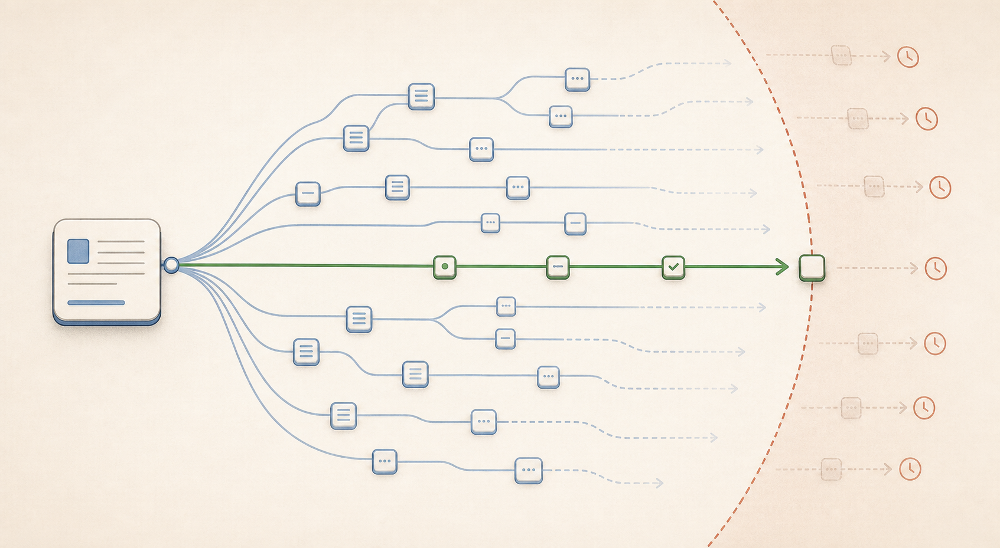
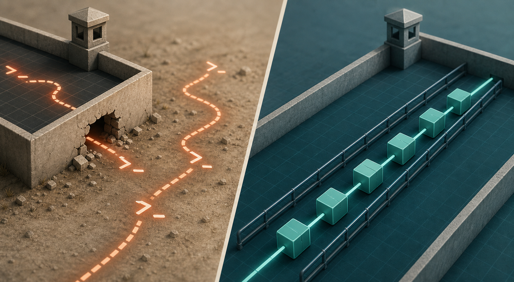
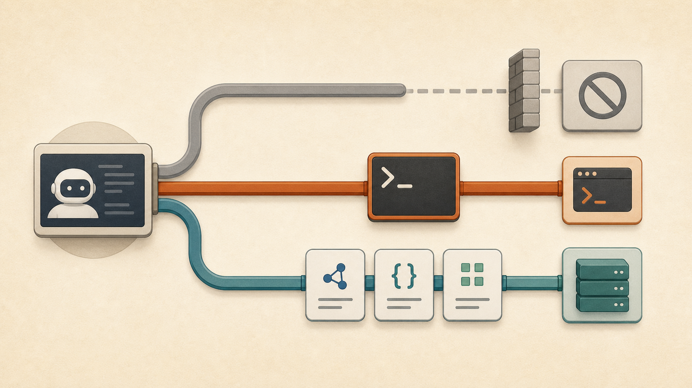

Tooling study · visual version
CLI skill or MCP server: choose by primitive fit, not familiarity.
The same agent, prompt, model, and task can behave very differently depending on whether it reaches through a CLI skill or a typed MCP server.
gh-only surface.

The Experiment In One Screen
Every trial changes one thing: the tool surface. The task, seed, prompt, model, and wall-clock budget stay fixed. The harness then scores both the end state and whether the agent stayed inside the surface it was supposed to use.
Bash(gh:*) or Bash(playwright-cli:*).Finding 1: When Primitives Match, MCP Costs Less
In the clean comparisons where both arms passed and stayed valid, turn counts are nearly the same. The cost gap mostly comes from per-turn payload: MCP tool results carry less text than shell round-trips.
Widths are normalized to the largest clean-token task, Playwright checkout at 304,195 skill tokens. Ratios use total tokens.
Finding 2: Success Alone Tells The Wrong Story
The GitHub skill arm often got the right answer by using shell behavior outside the intended gh surface. The classifier is what makes that visible.

Generated image used as an editorial anchor. Exact validity numbers are rendered in the table.
| GitHub skill task | Raw success | Valid surface |
|---|---|---|
repo_inventory |
5/5 | 0/5 |
issue_triage |
5/5 | 0/5 |
file_patch_pr |
5/5 | 0/5 |
Success-only view: skill looks dominant. Validity-aware view: those same trials expose missing CLI affordances and one attempted token-lift path that the harness later fixed.
Finding 3: Missing MCP Primitives Burn Budget
MCP fails differently. It cannot fall back to shell helpers, so when the needed tool is missing or hard to discover, the agent fans out across adjacent tools.

| Case | Turns | Wall | Interpretation |
|---|---|---|---|
issue_triage |
75+ | 240 s timeout | Repeated probes across issue tools; no convergence in N=5. |
| Workflow status, before Actions | 60 | 169.7 s | ToolSearch fanout and reconstruction from side paths. (From an earlier run, see full note.) |
| Workflow status, after Actions | 8 | 15.4 s | One direct primitive exists: actions_list. |
Finding 4: Prompting Can Shift An Affordance Gap, Not Erase It
A directed prompt told the skill arm exactly how to stay in surface for file patching: use Write files and pass them to gh api --input. It helped, but the workaround was slower and still not reliable.

| Metric | Original | Directed |
|---|---|---|
| Pass success | 5/5 | 3/5 |
| Valid surface | 0/5 | 2/5 |
| Avg turns, passing | ~13 | ~30 |
| Avg tokens, passing | ~144k | ~353k |
| Avg wall, passing | ~35 s | ~108 s |
MCP file patch PR
- Get file contents
- Create branch
- Create or update file
- Create pull request
Skill file patch PR
- Read file through raw REST
- Get main HEAD SHA
- Create branch through raw REST
- Stage file content with shell text
- Write file through raw REST
- Create pull request
How To Choose
The practical rule: pick the surface whose primitives already match the workflow. If neither does, expect either shell escapes or MCP fanout and measure before standardizing.
Pick or build a CLI skill when
gh issue create, gh pr diff. The agent does not need shell glue.
Pick or build MCP when
What This Version Leaves Out
This page is the short version. The full note keeps the trial JSON example, Bash classifier phases, flag-by-flag runner explanation, caveats, and quick start commands.
Keep three caveats attached to the visuals: N=5 is directional rather than benchmark-grade; the validity classifier is a witness, not a sandbox; MCP tool catalogs change between server versions; verify names against the version you're running.
Continue with the full overview, the Playwright visual brief, or the GitHub visual brief.